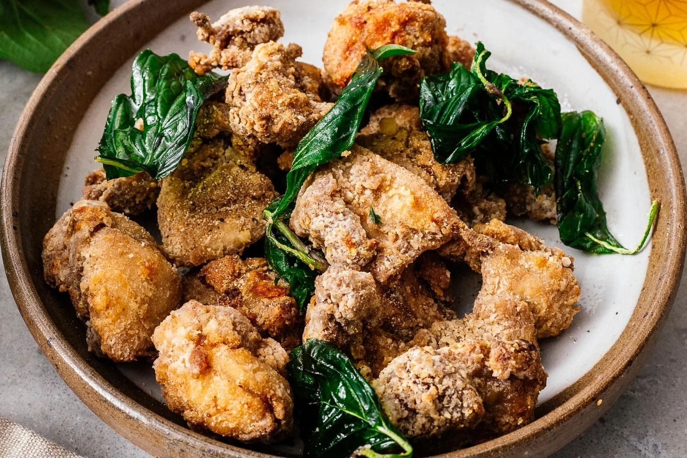

Home
Taiwanese Popcorn chcken

Ingredients
- 1 lb boneless skinless chicken thighs, cut into 1” cubes
- 1 small cube fermented bean curd
- 1 tbsp oyster sauce
- 1 tsp shaoxing wine
- 1/4 tsp white pepper
- 3 cloves garlic, chopped
- 3/4 cup sweet potato flour
- 1/2 tsp white pepper
- 1/2 tsp sichuan peppercorn, toasted and grind
- 1 tsp salt
- Handful thai basil
- frying oil
Instructions
-
Smash down fermented bean curd in a large mixing bowl with a spatula. Now add oyster sauce, shaoxing wine, white pepper and garlic then mix all the sauce together. Add the chicken and mix well. Cover and let it marinate for 2 hours to over night.
-
Heat frying oil to 350°F.
Add sweet potato starch and coat the marinated chicken evenly.
-
Carefully drop the chicken one by one in the frying oil. Do 2 to 3 batches to not to crowd the pot. If you crowd the pot too much, the oil temperature will drop to fast and too much. The chicken won’t turn out as crispy as it should be. Fry the chicken 3 to 4 minutes or until it’s floating on the surface of the oil and fully cooked. When the chicken is done cooking, remove from oil and place on a baking pan lined with cooling rack. Repeat with remaining chicken.
-
Now, increase the oil temperature to 375°F.
Mix salt, Sichuan pepper corn, white pepper and paprika in a small mixing bowl.
-
Add half of the first batch of the fried chicken and fry them for 30 seconds. Now, get ready a lid on your hand that is big enough to cover the frying pot and add handful of basil into frying oil and immediately close the lid. Count 5 seconds and uncover. Remove fried chicken and basil from the oil. Repeat with the remaining chicken and basil.
-
Sprinkle dry salt mixture on top of the fried chicken. Serve immediately. Enjoy!
Home